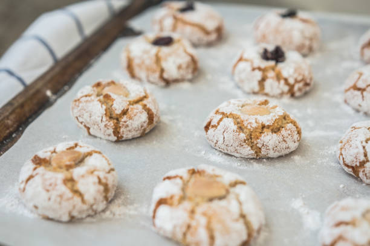

Nanna's Amaretti Biscuits

These are the quickest, easiest and most tastiest treats you can make yourself.
Ingredients:
- 500g Almond Meal/Ground Almond
- 300g Castor Sugar
- 5 x Egg Whites ( Room Temp )
- 1/2 19ml bottle of almond essence
- Icing Sugar for Dusting
Method:
- seperate 5 egg whites from the yolk and mix well in a bowl.
- once lots of bubbles form on top of the egg whites, add the almond essence and whisk gently.
- mix the almond flour and castor sugar together in a seperate bowl.
- add egg whites mix to dry mix and stir together.
- once all combined, use your hands to ensure its all incorporated.
- let the mix rest for an hour or overnight in the fridge.
- prepare a large baking tray and pre heat the oven to 180deg C.
- using a teaspoon, scoop up heaped amount, roll in palm of hand to form a ball.
- place ball in a bowl of icing sugar and coat.
- place ball onto tray leaving enough space between balls.
- flatten the balls slightly which will create circles.
- dust with more icing sugar and bake for 12-15mins.